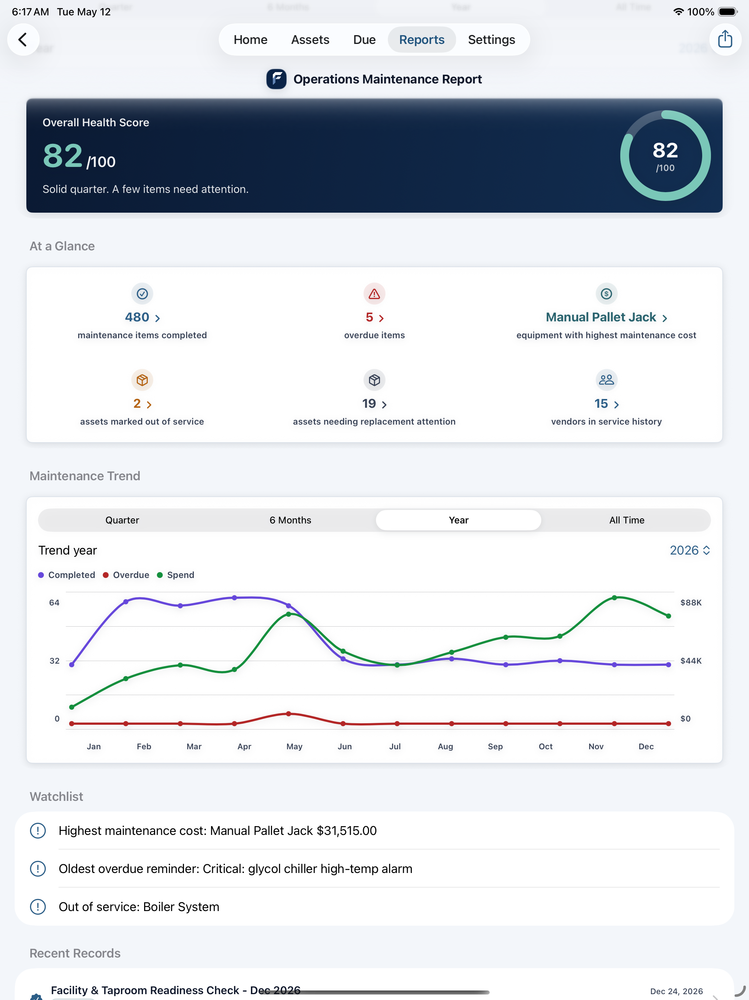

Stay ahead of overdue workHome
Overdue work, upcoming reminders, warranty alerts, and asset history stay visible before they become surprises.

iPhone and iPad. No subscription.
FixLog helps homeowners and small businesses track assets, schedule maintenance, store documents, monitor warranties, and generate reports for resale, inspections, budgeting, operations, and handoffs.
Built for homes, rentals, workshops, farms, small businesses, and anyone responsible for keeping things running.
Overdue work, upcoming reminders, warranty alerts, and asset history stay visible before they become surprises.
Who are you maintaining things for?
Choose the path that fits you. The same app keeps assets, reminders, documents, costs, and history organized without mixing unrelated records.
Track appliances, HVAC, plumbing, warranties, receipts, seasonal maintenance, and a useful Home Care Handoff for resale or your own records.
Track equipment, facilities, vehicles, inspections, QR labels, repair costs, warranties, documents, and operations handoff reports without enterprise software.
Why maintenance history matters
When something breaks, expires, needs service, changes hands, or costs money, good records matter. FixLog helps you keep proof of what was maintained, when it was done, what it cost, who did the work, and what needs attention next.
Keep a clear record of repairs, service work, and upgrades when it is time to sell or transfer responsibility.
Store receipts, warranty dates, service notes, and documents so important coverage details are easier to find.
See what maintenance is costing over time and spot expensive assets before they become surprises.
Keep records organized for property reviews, business operations, safety checks, and accountability.
How it works
FixLog is organized around the things you maintain, so each reminder, repair, document, warranty, cost, and report stays connected to the right asset.
Create records for appliances, equipment, rooms, vehicles, tools, systems, and facilities.
Track recurring work, due dates, inspections, seasonal tasks, and warranty expirations.
Save notes, costs, vendors, parts, photos, receipts, manuals, and service details.
Create useful records for resale, budgeting, insurance, operations, or handoffs.
The screenshots show the full loop: see what needs attention, open the asset, log the work, watch warranties, review costs, and export the handoff.
See upcoming, overdue, and warranty-related maintenance before it gets missed.
Track each asset with photos, details, warranty dates, reminders, and service history.

Business dashboards show out-of-service assets, upcoming work, costs, and priority reminders.

Create home, business, cost, and handoff reports when records need to be shared or reviewed.

Why not just Notes, Reminders, or spreadsheets?
Notes are easy to lose. Reminders do not keep a complete service history. Spreadsheets do not connect photos, warranties, QR labels, documents, costs, and reports to the asset they belong to. FixLog keeps the whole maintenance record together.
They remember details, but not the maintenance workflow around each asset.
They tell you something is due, but do not build a useful service history.
They track rows, but not photos, documents, QR labels, warranties, and reports in one asset record.
It keeps the asset, reminder, history, documents, costs, QR labels, and reports together.
Spaces
Use a Space for your home, business, rental, cabin, workshop, fleet, or farm. Each Space has its own assets, reminders, documents, costs, and history.
Trust and pricing
FixLog keeps records on your device unless you choose to export, share, or back them up. Create reports, CSV files, and backup files when you want a copy outside the app. FixLog Pro is a one-time $39.99 purchase with no subscription.
Get started
Download FixLog free, explore the homeowner or business example data, and unlock unlimited tracking with one purchase when you are ready.